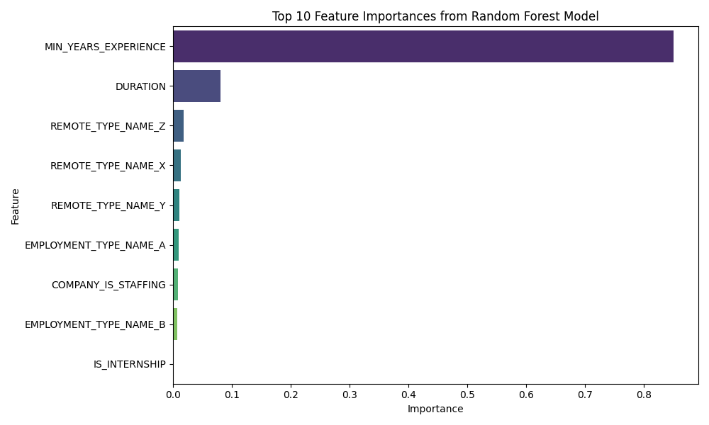
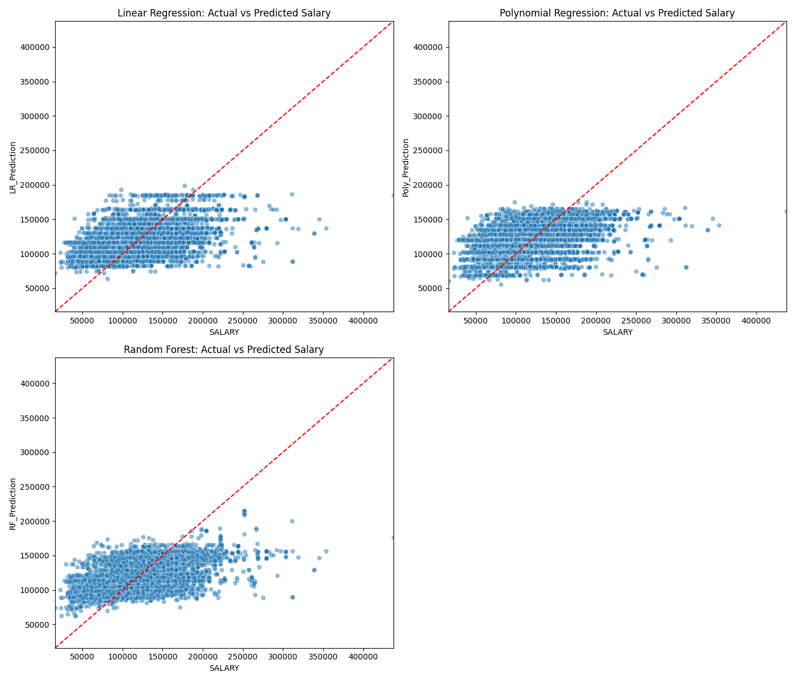

Assignment 04
Regression Analysis in Pyspark
Generative AI Disclaimer: AI was used to assist with organzing and arranging data pipelines to perform models.
Github Repository Link: https://github.com/met-ad-688/assignment-04-ryanmt1998.git
1 Feature Engineering
+------+--------------------------------------+-------------------------------------------+
|SALARY|features |features_poly |
+------+--------------------------------------+-------------------------------------------+
|192800|(9,[0,1,4,6],[6.0,55.0,1.0,1.0]) |(10,[0,1,2,5,7],[6.0,36.0,55.0,1.0,1.0]) |
|125900|(9,[0,1,4,6],[12.0,18.0,1.0,1.0]) |(10,[0,1,2,5,7],[12.0,144.0,18.0,1.0,1.0]) |
|118560|[5.0,20.0,0.0,1.0,1.0,0.0,0.0,1.0,0.0]|[5.0,25.0,20.0,0.0,1.0,1.0,0.0,0.0,1.0,0.0]|
|192800|(9,[0,1,4,6],[6.0,55.0,1.0,1.0]) |(10,[0,1,2,5,7],[6.0,36.0,55.0,1.0,1.0]) |
|116500|(9,[0,1,4,6],[12.0,16.0,1.0,1.0]) |(10,[0,1,2,5,7],[12.0,144.0,16.0,1.0,1.0]) |
+------+--------------------------------------+-------------------------------------------+
only showing top 5 rowsMy final structure has been created using features and polynomial features from the original dataset. I used an 80-20 training test split. I also used a random state of 42. I believe that an 80% training set provides a sufficient amount of data for the model to learn from, especially since our polynomial and random forest models require a large dataset to learn from. The other 20% is sufficiently large to provide a reliable estimate of model performance.
2 Linear Regression
[Stage 23:> (0 + 1) / 1]
R²: 0.27747505372039105
RMSE: 35354.21968106297
MAE: 27394.263039528487
Coefficients: [6831.19516740728,-16.944672967567364,-8335.0742639915,455.51244715909286,-1261.5274637185041,-3264.749623577828,7407.370489759505,8150.657530209268,22412.845022831403]
Intercept: 76301.15556556016
The linear regression model has a coefficient of determination (R²) of 0.2775, which means that about 27.75% of the variance in the salary data can be explained by our model’s features. The R² tells us that while our model captures some of the underlying patterns in the data, there are still many factors affecting salary that our model does not account for. Additionally, the root mean squared error (RMSE) of the model is 35,354, which indicates that, on average, our model’s salary predictions deviate from the actual salary by about $35,354. The mean absolute error (MAE) is 27,394, meaning that on average, our predictions for this model are off by about $27,394. Using the summary feature, we can look at the coefficients, standard errors, t-values, p-values, and confidence intervals of our features. The intercept is 76301.15, with a p-value of 0.000, highlighting that it is statistically significant. The MIN_YEARS_EXPERIENCE feature has a coefficient of 6831, but a high p-value of 0.47, indicating that it is not significant. Duration has a negative coefficient of -16.9, with a p-value of 0.22, so its not significant either. Additionally, IS_INTERNSHIP and COMPANY_IS_STAFFING are not significant. EMPLOYMENT_TYPE_NAME_B has a negative coefficient of -3264 with a p-value of 0.0024, so it has a negative impact. REMOTE_TYPE_NAME for X, Y, and Z are all significant, with Z having the largest, positive affect.
Feature Coefficient Std Error t-value p-value \
0 Intercept 76301.155566 102.177226 66.856338 0.000000e+00
1 MIN_YEARS_EXPERIENCE 6831.195167 23.498093 -0.721108 4.708573e-01
2 DURATION -16.944673 6746.455365 -1.235475 2.166790e-01
3 IS_INTERNSHIP -8335.074264 1058.463112 0.430353 6.669471e-01
4 COMPANY_IS_STAFFING 455.512447 2985.376196 -0.422569 6.726176e-01
5 EMPLOYMENT_TYPE_NAME_A -1261.527464 3602.352700 -0.906283 3.648051e-01
6 EMPLOYMENT_TYPE_NAME_B -3264.749624 2427.654733 3.051245 2.284094e-03
7 REMOTE_TYPE_NAME_X 7407.370490 2493.856758 3.268294 1.085129e-03
8 REMOTE_TYPE_NAME_Y 8150.657530 3132.647036 7.154603 8.897327e-13
9 REMOTE_TYPE_NAME_Z 22412.845023 3524.083191 21.651349 0.000000e+00
95% CI Lower 95% CI Upper
0 76100.870974 76501.440157
1 6785.134943 6877.255392
2 -13241.134758 13207.245412
3 -10409.840439 -6260.308089
4 -5396.328284 6307.353179
5 -8322.746176 5799.691249
6 -8023.362245 1493.862998
7 2518.990736 12295.750244
8 2010.141121 14291.173939
9 15505.047746 29320.642300
3 Polynomial Regression
[Stage 28:> (0 + 1) / 1]
R²: 0.2999111042236341
RMSE: 34800.97629236496
MAE: 26815.734743406734
Coefficients: [12321.424633194574,-410.81806941944365,-16.033371304985252,-4816.276067454366,-122.15434444725373,-4962.654169742263,-6422.5061156546435,6702.637628410731,7601.6311647419425,20955.03322404107]
Intercept: 67481.20783767497
The polynomial regression model has a coefficient of determination (R²) of 0.2999, meaning the model explains about 29.99% of variation in the salary data, which is a slight improvement over the linear regression model. The root mean squared error (RMSE) is 34,801, so the model predictions deviate from the actual salaries by about $34,801 on average. The mean absolute error (MAE) is 26,816 or $26,816, which is an improvement over the linear regression model as well. Using the summary feature, we can see the intercept is 67,481 with a p-value near 0.00, making it highly significant. The MIN_YEARS_EXPERIENCE feature has a coefficient of 12,321 and a p-value close to 0.00, indicating that it has a positive impact on salary. The quadratic term for MIN_YEARS_EXPERIENCE has a negative coefficient of -410.82, but does not have a significant impact based on its p-value of 0.49. We can conclude that DURATION, IS_INTERNSHIP, COMPANY_IS_STAFFING, and EMPLOYMENT_TYPE_NAME_A are not significant, as their p-values are all above 0.05. We can also see that EMPLOYMENT_TYPE_NAME_B has a negative coefficient of -6,422 and a p-value of 0.0053, indicating that it has a negative impact on salary. REMOTE_TYPE_NAME_X, Y, and Z are all significant, with Z having the largest positive impact. This model improves on the linear regression model by capturing years of experience as an impact on salary, but it still does not capture a large portion of the variance in the data.
Feature Coefficient Std Error t-value \
0 Intercept 67481.207838 363.827753 33.866093
1 MIN_YEARS_EXPERIENCE 12321.424633 26.151749 -15.709009
2 MIN_YEARS_EXPERIENCE_SQ -410.818069 23.252997 -0.689518
3 DURATION -16.033371 6679.822656 -0.721019
4 IS_INTERNSHIP -4816.276067 1048.064896 -0.116552
5 COMPANY_IS_STAFFING -122.154344 2963.608208 -1.674531
6 EMPLOYMENT_TYPE_NAME_A -4962.654170 3570.430449 -1.798804
7 EMPLOYMENT_TYPE_NAME_B -6422.506116 2402.744508 2.789576
8 REMOTE_TYPE_NAME_X 6702.637628 2468.084436 3.079972
9 REMOTE_TYPE_NAME_Y 7601.631165 3101.351134 6.756743
10 REMOTE_TYPE_NAME_Z 20955.033224 3532.222708 19.104460
p-value 95% CI Lower 95% CI Upper
0 0.000000e+00 66768.044088 68194.371588
1 0.000000e+00 12270.162795 12372.686472
2 4.905108e-01 -456.397864 -365.238275
3 4.709126e-01 -13109.612230 13077.545488
4 9.072169e-01 -6870.660004 -2761.892131
5 9.405324e-02 -5931.326202 5687.017513
6 7.207562e-02 -11961.299950 2035.991611
7 5.286330e-03 -11132.290539 -1712.721693
8 2.075044e-03 1864.775927 11540.499329
9 1.478861e-11 1522.459945 13680.802384
10 0.000000e+00 14031.281059 27878.785389
4 Random Forest Regressor

Our random forest regression model has several features and by creating a bar plot we can identify which features are the most important in predicting salary. The bar plot shows that MIN_YEARS_EXPERIENCE is the most important feature, with an importance score of over 0.8. The next most important feature is DURATION, with a importance score of over 0.1, significantly lower than MIN_YEARS_EXPERIENCE. The other features, such REMOTE_TYPE_NAME_Z, X, and Y, EMPLOYMENT_TYPE_NAME_A, COMPANY_IS_STAFFING, EMPLOYMENT_TYPE_NAME_B, and IS_INTERNSHIP are significantly less important, with importance scores close to 0.
5 Compare 3 Models – GLR, Polynomial, RF
+------+------------------+------------------+------------------+
|SALARY| LR_Prediction| Poly_Prediction| RF_Prediction|
+------+------------------+------------------+------------------+
|192800|122502.21258282862|127478.45317463673| 150419.0700588687|
|125900| 164116.3364870723|157631.88421478868|142783.37872342562|
|118560|117462.88045689506|121014.03449261448|122520.02802832137|
|192800|122502.21258282862|127478.45317463673| 150419.0700588687|
|116500|164150.22583300743| 157663.9509573987|142117.03903479254|
+------+------------------+------------------+------------------+The combines predictions for linear, polynomial, and random forest regression models highlight that the random forest model tends to be closer to actual salaries for higher values. The polynomial regression model performs slightly better than the linear regression model. The linear regression model seemingly underestimates salaries in some cases.

The three graphs comparing actual salaries to predicted salaries for each model show that all of the models tend to under-predict higher salaries, which indicates that the models are missing features that would help them better predict higher salaries. The random forest regression model appears to outperform the other two models, by producing predictions that are closer to actual salaries with less scatter. The linear and polynomial regression models are incredibly similar, but the latter appears to perform slightly better with a somewhat tighter clustering of points around the prediction line. The graphs are consistent with the metrics, such as log likelihood, RMSE, and MAE, which also indicate that the random forest regression model is the best of the three models.
RMSE - Linear Regression: 36023.3148101222
RMSE - Polynomial Regression: 35610.993411374555
RMSE - Random Forest: 33516.18792099613
By having the lowest of RMSE of 33,516.19, the random forest regression model predicts salaries more accurately on average. The polynomial regression model has an RMSE of 35,610.99, which is better than the linear regression model’s RMSE of 36,023.31. The polynomial regression model is better at predicting salaries than the linear regression model, but the random forest regression model is the best of the three.
AIC - Linear Regression: 59049.53483773521
[Stage 67:> (0 + 1) / 1]
AIC - Polynomial Regression: 58992.30571886943
The AIC for the linear regression model is 59,049.53 is greater than the AIC for the polynomial regression model of 58,992.31. This indicates that the polynomial regression model provides a better fit to the data compared to the linear regression model, while also handling the complexity of the data better.
[Stage 85:> (0 + 1) / 1]
Log Likelihood - Linear Regression: -171706.96027751334
Log Likelihood - Polynomial Regression: -171541.0037386337
Log Likelihood - Random Forest: -170667.02148159023Higher log likelihood values indicate a better fit to the data. The random forest got a value of -171,706.96, once again showing that it is the best model of the three. The polynomial regression model has a log likelihood of -171,541, which is better than the linear regression model’s log likelihood of -170,667.02.
BIC - Linear Regression: 343509.68149482517
BIC - Polynomial Regression: 343187.3445110457
BIC - Random Forest: 371977.54369869444The random forest regression model has the highest BIC score of 371,977.54, making it the least preferred based on this criterion, but that is because of the complexity of the model. The polynomial regression model has a BIC score of 343,187.34, which is less than the linear regression model’s BIC score of 343,509.68. Based on this criteria, the polynomial regression model is preferred over the linear regression model and the random forest regression model.